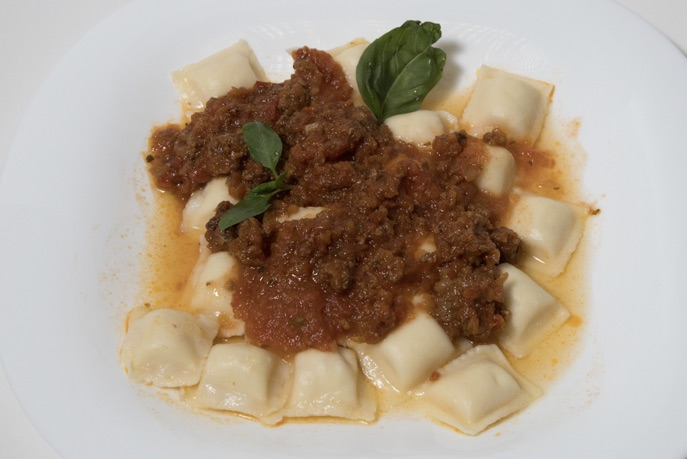

Ravioles a la Bolognesa

Descripcion
Este plato es el corazón de la cocina ítalo-argentina de domingo
Consiste en pasta rellena (generalmente de ricota, espinaca o carne) bañada en una salsa bolognesa espesa, cocinada a fuego lento con carne de res y tomate.
La clave del éxito reside en la paciencia para dejar que la salsa reduzca y concentre todos los sabores de los vegetales y la carne.
Ingredientes
- 500g de ravioles frescos (ricota o carne)
- 250g de carne picada de res
- 1 cebolla grande picada finamente
- 1 zanahoria rallada
- 500ml de puré de tomate
- 1 diente de ajo y una hoja de laurel
- Queso parmesano rallado al gusto
- Aceite de oliva, sal y orégano
Pasos
- Preparar la base: En una olla con aceite de oliva, sofríe la cebolla, el ajo y la zanahoria rallada hasta que estén tiernos.
- Cocinar la carne: Añade la carne picada a la olla, rompiéndola con una cuchara de madera para que no queden trozos grandes, y cocina hasta que dore.
- Reducir la salsa: Vierte el puré de tomate, añade el laurel y condimenta con sal y orégano. Tapa la olla y deja cocinar a fuego mínimo por al menos 30 minutos.
- Hervir el agua: Pon a calentar abundante agua con sal en una olla grande. Espera a que llegue a un hervor fuerte.
- Cocción de la pasta: Echa los ravioles al agua. Estarán listos cuando suban a la superficie (generalmente entre 3 y 5 minutos si son frescos).
- Emplatado: Escurre los ravioles con cuidado, sírvelos en un plato hondo y cúbrelos generosamente con la salsa bolognesa caliente.
- Toque final: Espolvorea abundante queso rallado por encima y sirve de inmediato.
Inicio